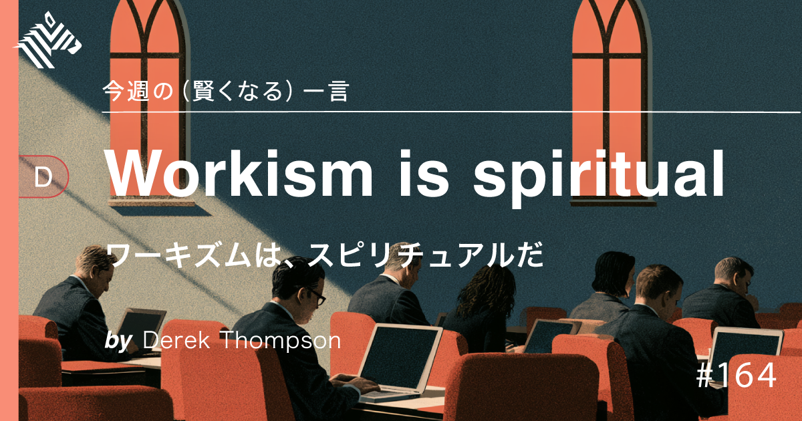
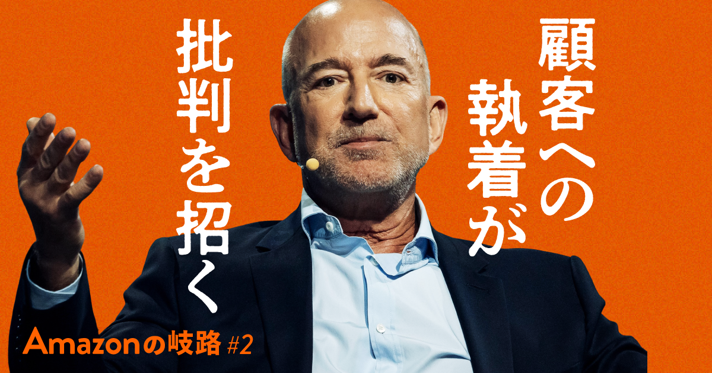
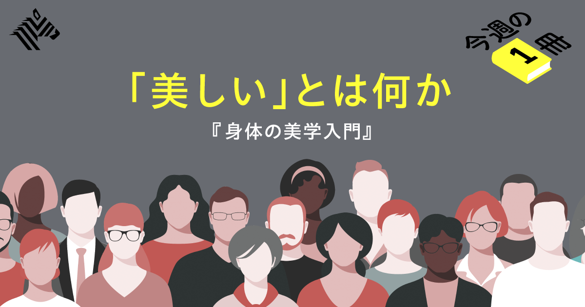
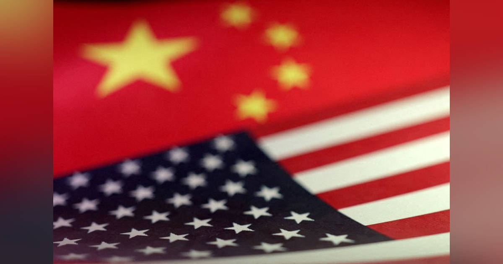
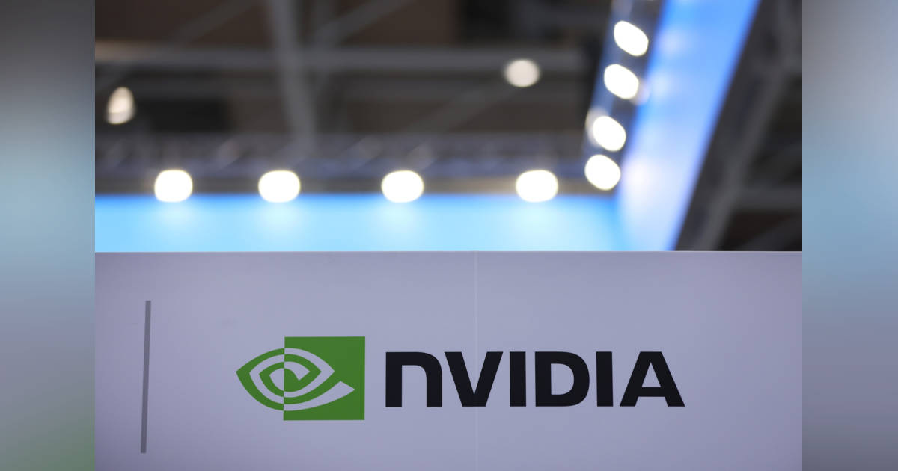

01
【ミニ教養】AI時代、エリートたちは「生きがい」を失った
発行日時：2026年8月16日 05:30 JST ・ NewsPicks編集部

あなたに関係ありそうな理由
AIを仕事や制作に使うほど、「何を速くするか」だけでなく、自分が続けたい役割や関係をどう残すかが実務上の問いになるためです。
概要
生成AIが高度な知的作業に入り込むほど、人は何を拠り所にして働くのかを考えさせる記事です。冒頭では、数学の未解決問題にもAIが成果を出し始めたという動きが紹介されます。かつてAIの可能性に懐疑的だったフィールズ賞受賞数学者のジェイコブ・ツィマーマン氏は、OpenAIに加わりました。さらにAnthropicのレヴェント・アルポージ氏は、AIモデル「Fable」を使い、ヤコビ予想に関わる反例を示したとされます。記事は、こうした進展を単なる研究効率化の話で終わらせず、名門大学、専門資格、高収入の仕事を人生の中心に置いてきた人ほど、AIによって自己像を揺さぶられる可能性に目を向けます。高い能力を磨き、社会的に評価される職に就くことが、生きがいや尊厳と強く結び付いてきた場合、仕事の一部をAIが担えるようになった時に、失うのは作業量だけではありません。記事が引く「ワーキズム」という見方は、仕事を経済活動以上の信仰やアイデンティティにしてきた状態を指します。その前提が弱まる局面では、仕事の外側にある家族、友人、地域、身体を使う活動、趣味のようなものを、後回しの余暇ではなく生活の柱として捉え直す必要がある、という問題提起です。表示コメントでも、これは恵まれた層だけの悩みなのか、AIが生む余白を誰が持てるのかという視点と、人間の判断や関係性が残るという見方が交差していました。記事が重く見るのは、技術進歩を止めるか受け入れるかという二択ではありません。専門性の高い人がAIと協働するようになっても、能力を証明するためだけに働き続ける前提は変わり得ます。仕事をしない時間を単なる空白ではなく、結果だけでは測れない関係や活動に振り向けられるか。AIにより空いた時間が自動的に豊かになるわけではなく、職場の期待や生活の負担が変わらなければ、より多くの成果を求められるだけにもなりかねません。自分の役割を考え直すには、技術の能力だけでなく、評価の制度や周囲との関係も見直す必要があります。変化の利益と負担が誰に配分されるのかも含め、AI導入の議論を、代替される職種の予測だけでなく、各人が仕事以外に何を育てるかという問いへ広げる記事です。
仕事や会話で使える一言
AI導入の問いは、何を自動化するかだけでなく、仕事の外に何を残すかです。
NewsPicks原文を読む
02
【決戦】独占アマゾンを待ち受ける2027年の苦境
発行日時：2026年8月16日 05:30 JST ・ NewsPicks編集部（FORTUNE）

あなたに関係ありそうな理由
AI投資の規模だけでなく、組織文化、規制、雇用を同時に見なければ、大企業の競争力を読み違えるためです。
概要
フォーチュンの2026年版グローバル500で、アマゾンが12年連続首位だったウォルマートを上回ったことを起点に、同社が次に直面する課題を追った記事です。小売、物流、クラウドを束ねて規模を広げてきたアマゾンは、現在はAIにも巨額を投じています。記事によれば、同社は2026年に約2000億ドルのAI関連設備投資を見込まれ、ハイパースケーラー全体では約7000億ドルに達する予測です。AWSは自社製AIチップのTrainiumやGravitonを軸にし、2027年にはTrainium4も計画しています。AI事業の年間売上ランレートは開始3年余りで150億ドルを超え、AWS全体が3年目に得た約5800万ドルと比べても、立ち上がりの速さが際立つと記事は伝えます。一方で、巨大化は安心材料だけではありません。アマゾンには、優先順位を徹底的に絞る文化、激しい社内競争、現場への高い要求があり、それが成長を支える反面、働き方や雇用への批判も呼んできました。本社部門で約3万人の人員削減を進めたこと、組合結成をめぐる対立、2023年に米連邦取引委員会と17州が起こした訴訟が2027年に審理を控えることも、次の局面を左右します。元消費者部門トップのジェフ・ウィルケ氏は、すべてを優先することはできないという趣旨を語り、創業者ジェフ・ベゾス氏も、より多くをこなす方法を探す姿勢を示してきました。記事には、拡大を続ける会社ほど、何に資源を集中し、何をあきらめるかが問われるという緊張があります。クラウド、物流、小売をまたぐ事業構造は、一つの市場で得た強さを別の投資に回せる反面、各分野の規制や批判も全社へ波及させます。AIチップの内製化が進むほど、技術はコストだけでなく差別化にも関わります。2027年に予定される訴訟の審理は、市場支配力をめぐる評価が事業の自由度にどう影響するかを測る場にもなります。コメントでは、垂直統合の強さを評価する声と、すべてを優先しようとする組織の負荷を警戒する声がありました。投資額や売上だけで企業を判断せず、規制対応、従業員との関係、経営資源の配分まで含めて見る必要がある、という読み物です。
仕事や会話で使える一言
巨大化を測る時は、AI投資の伸びと、競争・働き方の負担を同じ表に置くべきです。
NewsPicks原文を読む
03
【謎】人はなぜ、「美しさ」「醜さ」の価値基準が変わるのか
発行日時：2026年8月16日 05:30 JST ・ NewsPicks編集部

あなたに関係ありそうな理由
企画や制作では、広く受け入れられている基準を使うだけでなく、その基準からこぼれる魅力を見つけて言葉にする力が問われるためです。
概要
美しさや醜さを自分の好みだけで判断しているようで、実際には社会や時代がつくった基準に大きく影響されているのではないか――美学者・伊藤亜紗氏への取材から考える記事です。伊藤氏は、多くの人が共有する「規範的感性」と、そこから外れたものに惹かれる「逸脱的感性」を区別します。前者は文化や慣習を通じて身に付き、何が整っているか、何が魅力的かという判断を素早く可能にします。ただし、基準が強すぎれば、そこから外れる身体、表情、ふるまいを無意識に低く見る偏見にもつながり得ます。記事では体形をめぐる価値観について、欧米の人種観と結び付いた歴史的な背景があったことにも触れ、見た目への評価を単純な生存上の有利さだけで説明できないと示します。反対に、かつて山は荒々しく醜いものと見なされることがあったのに、18〜19世紀に「崇高」という概念が広がると、恐ろしさを含む雄大さとして鑑賞されるようになった例も紹介されます。対象そのものが変わらなくても、それを見るための言葉や枠組みが変われば、感性も変わるのです。伊藤氏は、無意識の反応をただ抑え込むより、なぜそう感じたのかを自覚し、他者と話し合うことを重視します。これは、違和感を即座に否定したり、反対に多数派の基準を絶対視したりしないための態度でもあります。感性は個人の内面だけで完結せず、教育、メディア、周囲との会話によって更新されます。既存の評価軸に違和感を抱く人の声は、単なる少数意見ではなく、次の表現や市場をつくる手がかりになります。その意味で逸脱的感性は、規範を壊すためだけのものではなく、既存の基準では拾えない価値を発見する働きを持ちます。異なる感じ方を説明する言葉を増やすこと自体が、対話の幅を広げます。AIを使う制作でも、学習データに多い判断を正解にせず、何が見えにくくなっているかを問う余地があります。表示コメントには、商品やサービスをつくる場で既存の「普通」をなぞるだけでは新しい市場が生まれにくいこと、AIが多数派の基準を再生産する可能性への指摘がありました。誰かの好みを正誤で裁くのではなく、基準の成り立ちと例外の魅力を理解することが、創造や対話の出発点になると伝える記事です。
仕事や会話で使える一言
基準を守るだけでなく、基準の外にある魅力を言葉にできるかが企画を変えます。
NewsPicks原文を読む
04
米政権、ＡＩ連携国に踏み絵か 中国の枠組みと二股なら除外と警告
発行日時：2026年8月16日 13:40 JST ・ Reuters

あなたに関係ありそうな理由
AIモデル、データ、半導体、クラウドの選択が、機能比較だけでなく取引先や制度への依存を選ぶことにもなるためです。
概要
米国が主導するAI連携の枠組みに加わる国に対し、中国の類似枠組みとの二重参加を認めない方向で警告する文書を準備していると、ロイターが報じた記事です。報道によれば、米政権は「AI Opportunity Statement」に署名した35カ国へ書簡を送り、中国主導の同種の枠組みに参加すれば米国のAI連合から除外される可能性があると伝える案を検討しています。米国は昨年、AIモデル、半導体、重要鉱物の確保を視野に入れた非拘束の協力枠組み「Pax Silica」を立ち上げました。日本はAI Opportunity Statementに署名しており、他方、中国は7月に29カ国と世界AI協力機構を発足させています。記事時点で両方に加わっているのはカザフスタンだけとされ、表面上は技術協力の話であっても、参加国には立場の選択が迫られます。ここで争われているのは、単にどの国のAIが優秀かではありません。半導体やデータセンターをどこに頼るのか、モデルやデータのルールを誰が定めるのか、重要鉱物を含む供給網をどう確保するのかという、長期の産業基盤です。書簡は検討段階の報道であり、対象や運用の詳細はなお不明です。それでも、片方の制度に参加することがもう片方との取引や協力の条件に影響するなら、国だけでなく企業の調達や事業継続にも関わります。国際的な枠組みの名称だけを追うのでなく、参加条件、対象技術、供給網への影響が実際にどう定められるのかを追うことが、今後の判断材料になります。企業の現場では、契約やデータの置き場所といった日常の選択が、外交上の線引きと結び付く可能性もあります。今後の書簡の内容と各国の反応が注目されます。表示コメントでも、オープンウェイトの大規模言語モデルやゲーム、ソフトウェア支援までどこが対象になるのかという境界の曖昧さ、米国依存を強める可能性、企業にもデータとインフラの選択が及ぶという論点が出ていました。記事は、AIの国際連携が中立的な協力だけでは進みにくく、標準、供給網、安全保障が重なった外交課題になっていることを示します。利用者や事業者も、性能、価格、導入容易性に加え、依存先と将来の制度変更を見ておく必要があります。
仕事や会話で使える一言
AIの選定は性能比較だけでなく、依存先と制度の選択になり始めています。
NewsPicks原文を読む
05
エヌビディア、ソフトバンクG出資のSBエナジーに最大30億ドル－報道
発行日時：2026年8月16日 05:10 JST ・ Bloomberg

あなたに関係ありそうな理由
AI活用の広がりを読むには、モデルの性能だけでなく、電力・データセンター・資金調達を含む実装コストを見る必要があるためです。
概要
エヌビディアが、ソフトバンクグループの出資を受けるデジタルインフラ企業SBエナジーに最大30億ドルを出資する方向で協議しているとブルームバーグが報じた記事です。SBエナジーは米オハイオ州でOpenAI向けのデータセンター計画を進めており、今回の協議はAIを動かすための設備投資と資金支援がどれほど大きくなっているかを映します。報道では、データセンター群の建設に向け、最大1000億ドル規模の信用支援をめぐる協議の一部として、エヌビディアの投資が検討されているとされます。案の一つは、オハイオ州の取引完了時に15億ドルを拠出し、残りをSBエナジーの株式公開に合わせて投じる形です。GPUを供給する企業が、顧客側のインフラ整備や資金面にも関わる構図は、AI産業がソフトウェアだけでは回らないことを示します。大規模モデルの利用拡大には、計算機、土地、送電網、冷却、長期間の設備運用が必要で、投資回収の設計も重要になります。大規模な信用支援が必要になるほど、データセンターの稼働率、電力の確保、利用企業の信用力は、技術選定と同じ重さを持ちます。設備を建てる判断と、実際に長期で利用される見通しは別に検証する必要があります。記事の数字が大きいからこそ、投資額を単独で見るのでは不十分です。建設から稼働までには時間がかかり、電力接続や冷却能力が予定どおり確保できるかも採算に影響します。AI需要の予測が外れた場合、長期の借入と短い機器の更新周期をどう整合させるかも、関係者が見るべき点です。その整合が崩れれば、投資規模の大きさ自体がリスクにもなります。そのため、計画の進捗と資金の条件を併せて読む必要があります。表示コメントでは、AIの競争の焦点がモデルから電力と設備へ移っているという見方とともに、供給者の資金支援が売上を支える「ベンダーファイナンス」になり得ることへの懸念が出ていました。GPUの世代交代は速い一方で、データセンターの借入やプロジェクト融資は長期になりやすく、特定テナントへの依存や信用リスクも論点になります。記事は、AI投資を評価するとき、派手な製品発表だけでなく、誰が設備を持ち、電力を確保し、資金を回収できるのかまで確認すべきだと教えます。
仕事や会話で使える一言
AI投資はモデルの性能だけでなく、電力・設備・資金回収を回せるかで決まります。
NewsPicks原文を読む